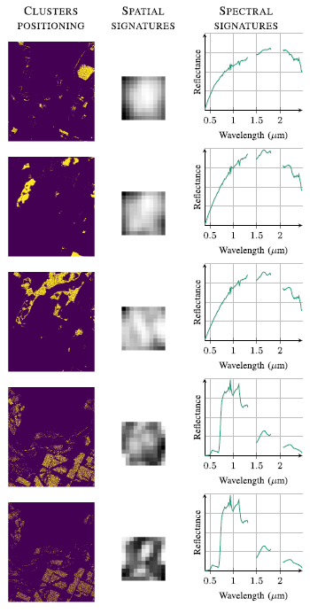

Matrix Cofactorization for Joint Spatial-Spectral Unmixing of Hyperspectral Images
Hyperspectral unmixing aims at identifying a set of elementary spectra and the corresponding mixture coefficients for each pixel of an image. As the elementary spectra correspond
to the reflectance spectra of real materials, they are often very correlated, thus yielding an ill-conditioned problem. To enrich the model and reduce ambiguity due to the high correlation,
it is common to introduce spatial information to complement the spectral information. The most common way to introduce spatial information is to rely on a spatial regularization of the
abundance maps. In this article, instead of considering a simple but limited regularization process, spatial information is directly incorporated through the newly proposed context of spatial
unmixing. Contextual features are extracted for each pixel, and this additional set of observations is decomposed according to a linear model. Finally, the spatial and spectral observations are
unmixed jointly through a cofactorization model. In particular, this model introduces a coupling term used to identify clusters of shared spatial and spectral signatures. An evaluation of the
proposed method is conducted on synthetic and real data and shows that results are accurate and also very meaningful since they describe both spatially and spectrally the various areas of
the scene. Some results of the clustering steps are depicted in Fig. 1.

Fig. 1. AVIRIS image. Five particular clusters described by their (Left)
spatial positioning, (Middle) mean spatial signature, and (Right) mean spectral
signature.
The model and the algorithms are detailed in the paper published in IEEE Trans. Geosci. Remote Sensing (2020):
- article
 .
.
The corresponding Python codes are available on Adrian Lagrange's GitHub.
- Python codes
 .
.